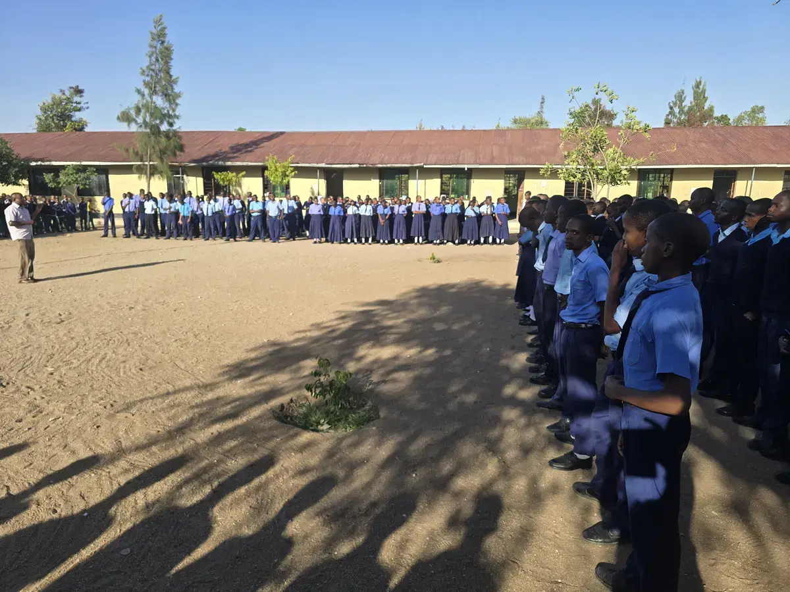
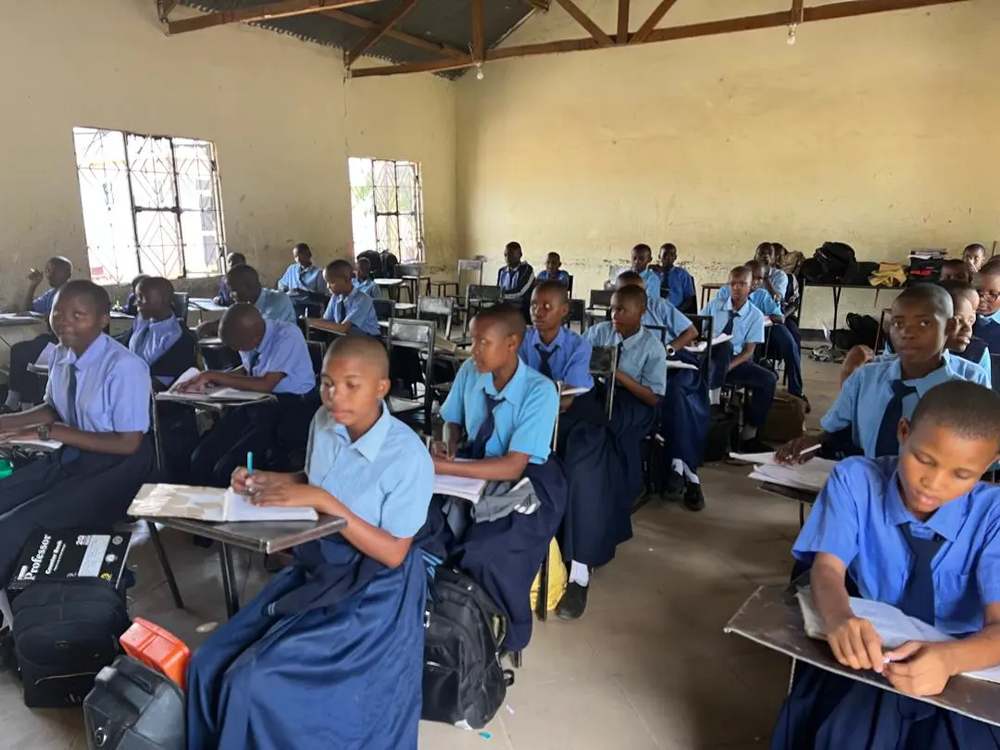
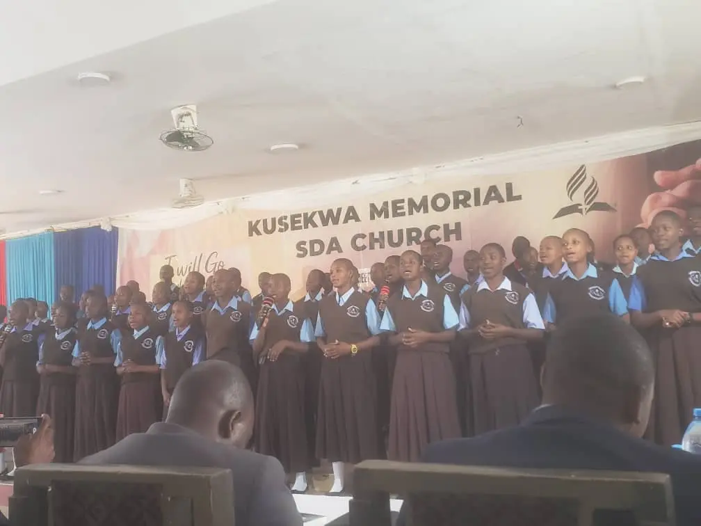
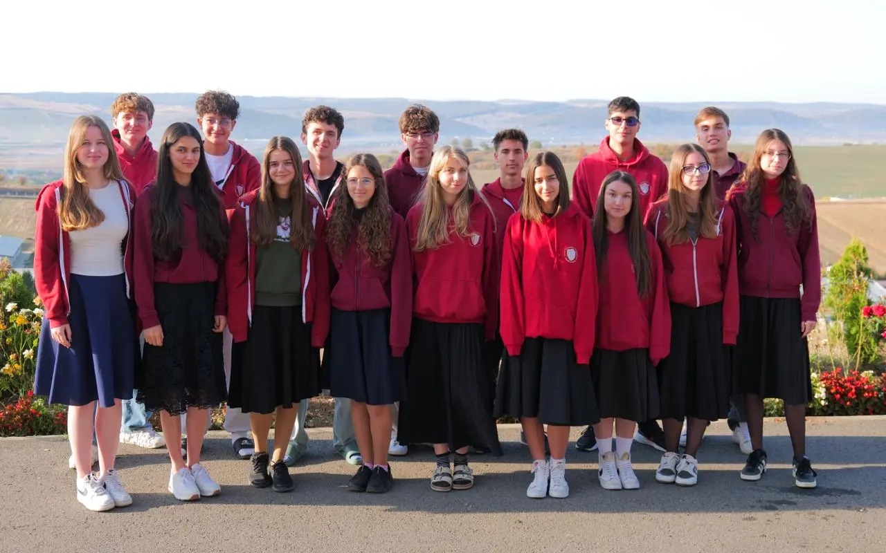

El sueño de la clase de 12.º
Bariadi · Tanzania
Más de 700 alumnos.
Una escuela con muchas necesidades.

Aulas llenas.
Pocos medios.

La iglesia se reúne
en el comedor.

30 personas.
Un mes.
20 alumnos y algunos adultos con oficio. Construimos una iglesia y un consultorio médico, damos clases y llevamos alimentos, material escolar y productos de higiene a las familias más pobres. Es el cuarto año seguido que Integritas va a África.

Galería
Cada gota
cuenta.
Estos 700 alumnos merecen mejores condiciones para la educación y la adoración.
El dinero no se va en el viaje. Cada alumno y cada adulto se paga su propio viaje. Todo lo que donas llega a la misión en Tanzania.
Pon tú también un ladrillo
O por transferencia bancaria
ParaFundația Educatio Plena
IBAN RONRO77 RZBR 0000 0600 1886 6089
IBAN EURRO27 RZBR 0000 0600 2135 5524
ConceptoAfrica Kusekwa
BancoRaiffeisen · BIC RZBRROBU
Con el concepto «Africa Kusekwa», la fundación sabe que el dinero es para la misión.
El dinero llega a la Fundația Educatio Plena, la fundación del Liceo Integritas.